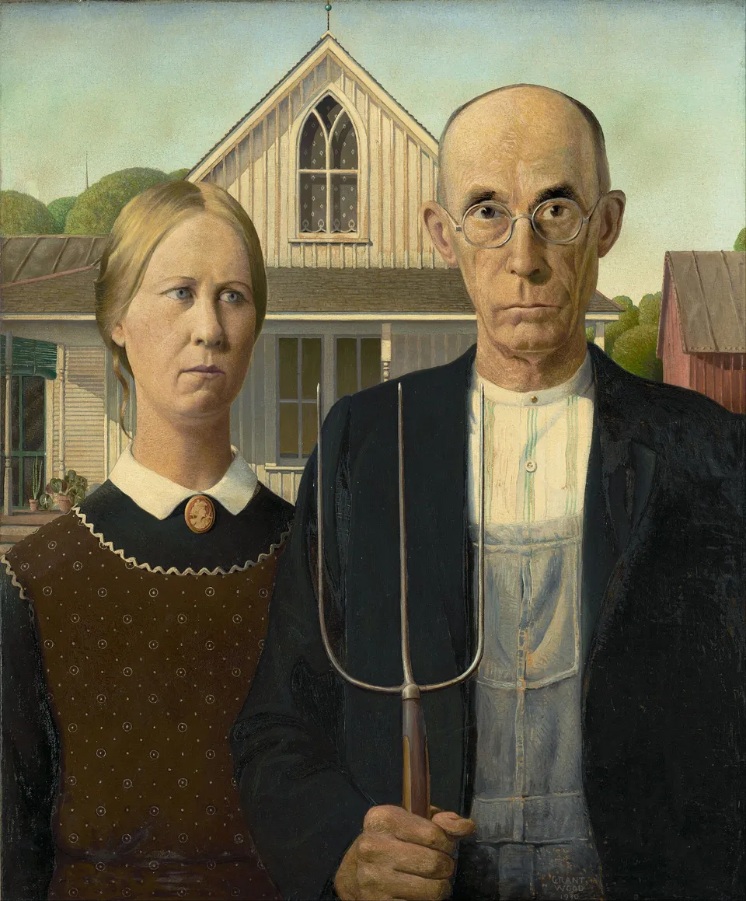

这是一次纯人工的视觉判断实验。下面 8 张候选来自仓库内已核验许可的真实作品， 其中既有绘画也有电影影像。在你看完并提交评分之前，页面不会告诉你任何一张的名字、 作者、来自哪部电影，也不会告诉你算法给它们打了多少分、排第几。 你的判断是这次实验唯一的人工依据，我不会替你填，也不会预先给出"正确答案"。

布面油画 · 芝加哥艺术博物馆 · 公有领域
提示：这一页只揭示"哪张图是哪个作品"和"算法原本把它排在哪"。 本页不计算 nDCG / Precision 等指标——那些要等你的评分完整落盘后才另跑， 而且必须连同样本版本、量表版本一起报，否则数字没有意义。